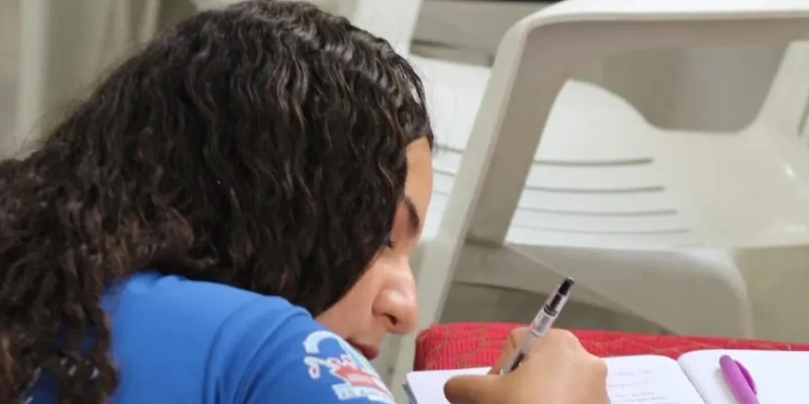

Retiros provinciales de Pastoral Juvenil (Valencia y Cumaná)
Dos retiros, en Valencia y en Carúpano, para los secretariados de Pastoral Juvenil de dos provincias eclesiásticas.

Datos del evento
- Fecha
- Valencia, del 26 al 28 de septiembre de 2026; Cumaná, del 6 al 8 de noviembre de 2026
- Hora
- No publicada en las notas oficiales.
- Modalidad y lugar
- Presencial · Arquidiócesis de Valencia, y Casa de la Caridad «Santa Ana», Diócesis de Carúpano (para la provincia de Cumaná)
- Organiza
- Pastoral Juvenil, con el Centro de Laicos, Familia y Juventud
- Estado
- Realizados dos retiros de la ruta nacional
Cómo fue
Del 26 al 28 de septiembre, en la Arquidiócesis de Valencia, se retiraron los secretariados de Pastoral Juvenil de Maracay, Puerto Cabello, San Carlos y Valencia. El retiro se inspiró en el lema «Él se acercó y comenzó a caminar con ellos».
Del 6 al 8 de noviembre, en la Casa de la Caridad «Santa Ana», de la Diócesis de Carúpano, se juntaron los secretariados de Margarita, El Tigre, Carúpano y la Arquidiócesis de Cumaná. La coordinadora nacional de Pastoral Juvenil dirigió el retiro, que tuvo tres pilares: silencio, diálogo y estudio. El obispo de Carúpano presidió la homilía.
Qué se hizo
- Se retiraron en Valencia los secretariados de Maracay, Puerto Cabello, San Carlos y Valencia.
- Vivieron en Carúpano tres pilares: silencio, diálogo y estudio.
- Celebraron la homilía con el obispo de Carúpano.
Quién participó
Solo cargos públicos. Los nombres de laicos participantes y de menores no se publican.
- Secretariados provinciales de Pastoral Juvenil y sus asesores.
- La coordinadora nacional de Pastoral Juvenil, que dirigió el retiro de Carúpano.
- El obispo de Carúpano.
Galería

Retiros provinciales de Pastoral Juvenil (Valencia y Cumaná), Arquidiócesis de Valencia, y Casa de la Caridad «Santa Ana», Diócesis de Carúpano (para la provincia de Cumaná), valencia, del 26 al 28 de septiembre de 2026; Cumaná, del 6 al 8 de noviembre de 2026. Un joven escribe en un cuaderno durante el retiro provincial, de perfil. Crédito: CEV Medios, fuente: Diócesis de Carúpano.